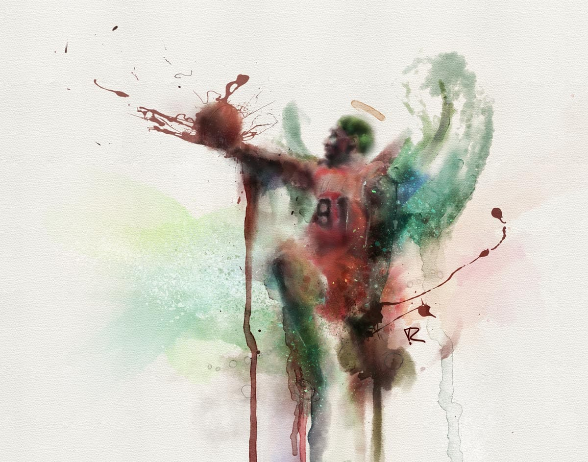

Dennis Rodman Watercolor
Digital Watercolor - #BeforeBasketballWasBad
Dennis Rodman Watercolor
Now this is what I was referring to when I said the NBA doesn't have any 'characters' anymore. Let's reflect on the dynasty team that the Chicago Bulls had in the 90's. Rodman, although not the most glamourous, or refined player, definetly made up for it in his hair and wardrobe. All cosmetics aside though, Rodman was the rebound/hustle king in my book, and deserves his own place in the series #BeforeBasketballWasBad.


